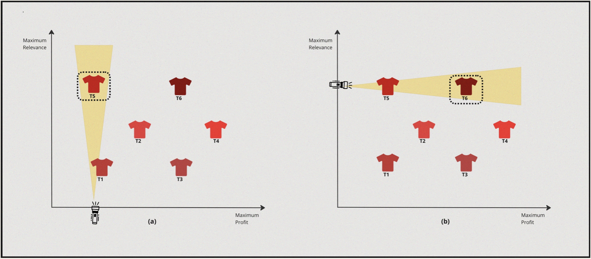
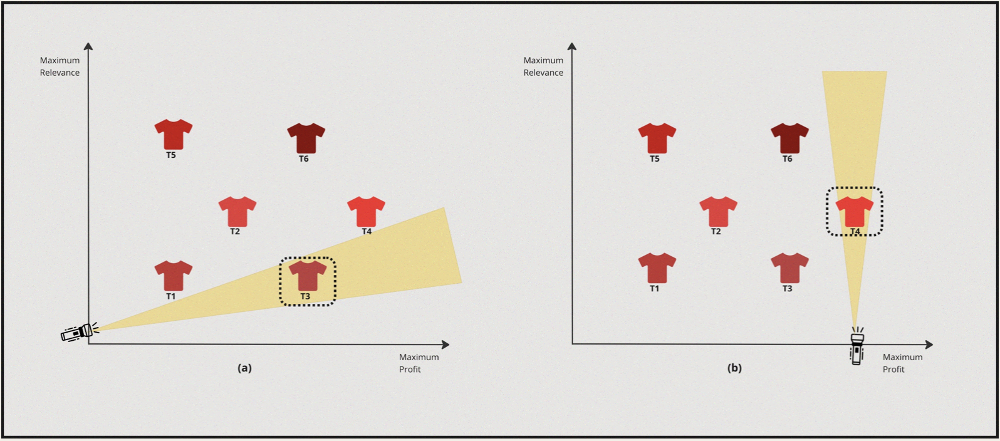

MOO - The What, The Why & The How.
After that long detour, let’s now look into Multiple Objective Optimisation applied to Ranking problem within a marketplace setting involving multiple stakeholders. Let’s do so with a simple illustrative example that involves similar item recommendations. Specifically, let’s understand Why this is needed first.
Picture this, A User has browsed and explored a bunch of different red shirts they are planning to buy, and on one such open tab we’ve got a shirt that they are closely examining. Now, the recommendation system in the backend is also generating a bunch of similar shirts that they might be interested to explore. Let’s say the recommendation system is optimising for two different objectives - firstly, to show relevant and personalised shirts similar to their style based on interaction history. Secondly, the platform also wants to make sure it’s making a good profit on each sales that the recommendation system generates or leads to. Hence, they would also want to promote shirts with good porfit margin. How would we do this?
Let’s start by defining our objectives:
| Objective I | Objective II |
|---|---|
| Personalisation | Price Margin |
Let’s also say the item options available to us to be displayed (let’s focus on finding the top-1 item at the moment.) if plotted on a graph look something like this:

Now, essentially we want to maximise profit margin but also we want to maximise for highly personalised & relevant shirt. If we were to solve this from a lens of single objectve optimisation two scenarios would arise:
Case-I: Applying 1D Optimisation to objective I followed by optimising for objective II, i.e First we can find Highly Personalised shirts and then search for the shirt that also provides maximum margin.
Case-II: Applying 1D Optimisation to objective II followed by optimising for objective I, i.e First we can find High Profit margin shirts and then search for the ones which are also Highly Personalised & relevant for the user’s style.
For a simple and better understanding of the concept, assume that someone is trying to find the best red shirt from both the perspectives manually in a physical store, and let’s further also assume its a dark room.
Case I : Highly Personalised & High Profit margin

- So, in this case the solver turns the torch on towards the relevance axis and discovers \(T5\) as the most suitable candidate.
- Now from this point the solver turns towards the profit axis and turns the torch on and discovers \(T6\).
Case II : High Profit margin & High Personalisation

- In this case the solver turns the torch on towards the profit axis and discovers \(T3\) as the best candidate.
- Now from this point the solver turns towards the relevance axis and turns the torch on and discovers \(T4\).
What do we have as of now:
| Process | 1st Optimization Objective | 2nd Optimization Objective | Optimal Solution |
|---|---|---|---|
| 1 | Personalisation | Profit Margin | \(T6\) |
| 2 | Profit Margin | Personalisation | \(T4\) |
So, that seems odd. There are multiple solutions. Depending on what we want to achieve- If we want to optimize for both objectives and find the best solution, Going about in the above method is not the best way. Instead, we need to optimize to find solutions for both objectives collectively. The set of optimization methods that enables this is called Multiple Objective Optimization.
Let’s define what MOO is & try to understand some other key concepts associated with it.